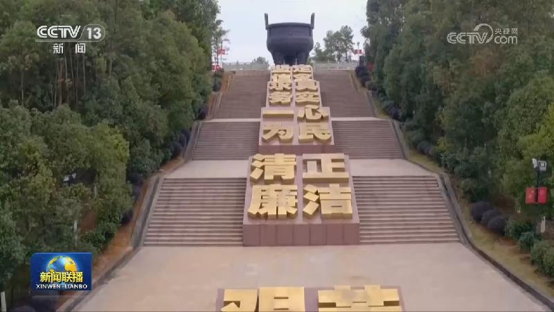
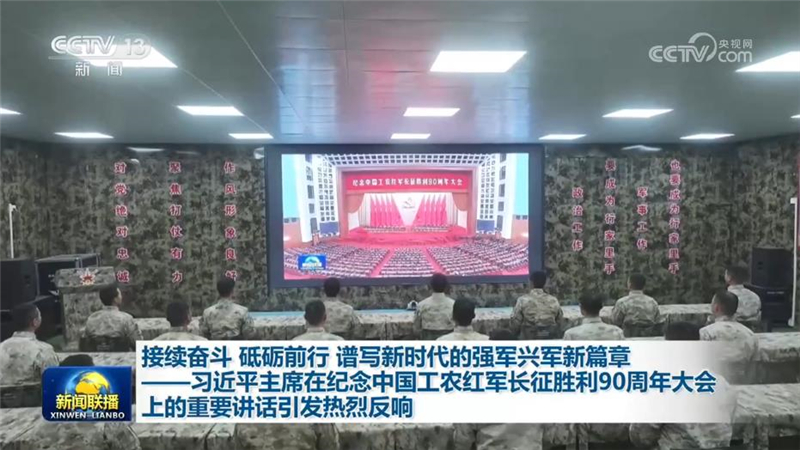
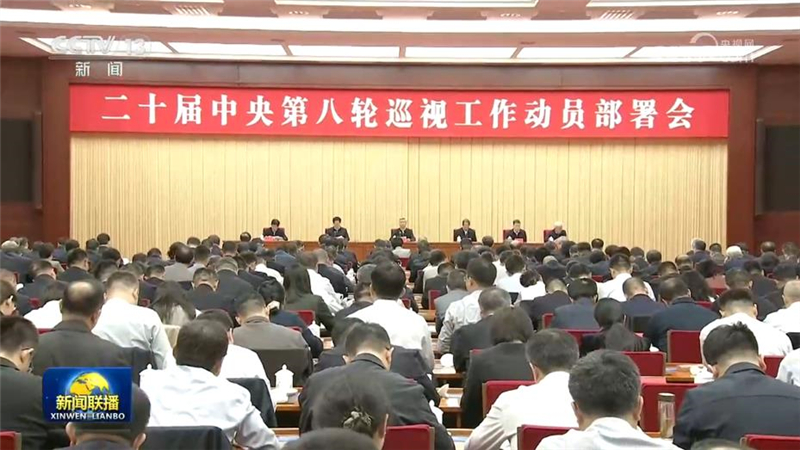
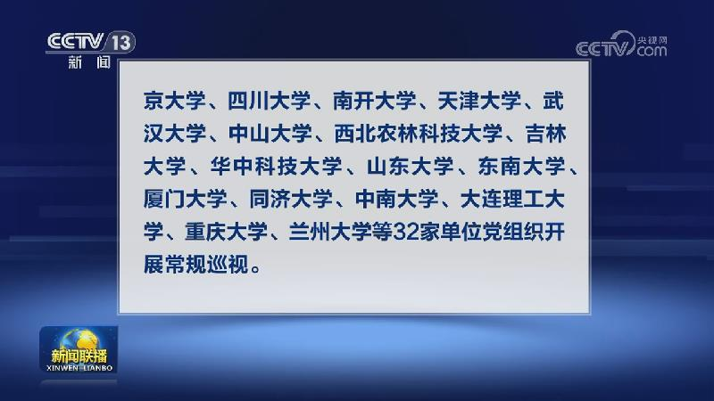
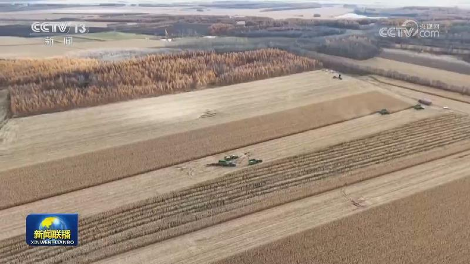
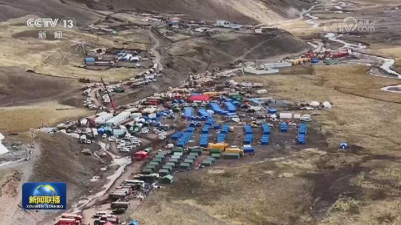

01
习近平向2026全球治理论坛（雄安）致信
10月23日，国家主席习近平向2026全球治理论坛（雄安）致信。习近平指出，当前，世界百年变局加速演进，和平赤字、发展赤字、安全赤字、治理赤字有增无减。我提出全球治理倡议，旨在推动构建更加公正合理的全球治理体系，建设一个更加美好的世界。……

10月23日，国家主席习近平向2026全球治理论坛（雄安）致信。习近平指出，当前，世界百年变局加速演进，和平赤字、发展赤字、安全赤字、治理赤字有增无减。我提出全球治理倡议，旨在推动构建更加公正合理的全球治理体系，建设一个更加美好的世界。……
本台播发央视快评《以信心汇聚力量 以合作破解难题》。

习近平总书记强调，治国必先治党，党兴才能国强。党的十八大以来，以习近平同志为核心的党中央从巩固党的执政地位、实现中华民族伟大复兴的战略高度，持之以恒推进全面从严治党，不断开创新时代管党治党、兴党强党新局面，团结带领全党在新的长征路上奋力创造新的辉煌。

习近平主席在纪念中国工农红军长征胜利90周年大会上的重要讲话在全军部队引发热烈反响。广大官兵一致表示，要弘扬伟大长征精神，接续奋斗、砥砺前行，以忠诚履职、向战而行的实际行动走好新时代强军长征路，奋力实现建军一百年奋斗目标。
中共中央政治局常委、全国政协主席王沪宁24日陪同朝鲜劳动党总书记、国务委员会委员长金正恩访问丹东，转达习近平总书记、国家主席的亲切问候和良好祝愿。

中共中央政治局常委、中央巡视工作领导小组组长李希近日出席二十届中央第八轮巡视工作动员部署会并讲话。会议传达学习了习近平总书记听取中央第七轮巡视情况汇报时的重要讲话精神，对巡视教育部和中管高校作出安排，强调要认真学习领会习近平新时代中国特色社会主义思想特别是习近平党建思想，深刻领悟“两个确立”的决定性意义、坚决做到“两个维护”，以更高标准、更实举措推动新征程巡视工作高质量发展，更好发挥巡视管党治党利……

经党中央批准，二十届中央第八轮巡视将对教育部、北京大学、清华大学、中国人民大学、北京师范大学、复旦大学、上海交通大学、西安交通大学、中国科学技术大学、中国农业大学、北京理工大学、北京航空航天大学、西北工业大学、哈尔滨工业大学、浙江大学、南京大学、四川大学、南开大学、天津大学、武汉大学、中山大学、西北农林科技大学、吉林大学、华中科技大学、山东大学、东南大学、厦门大学、同济大学、中南大学、大连理工大学……

农业农村部最新农情调度显示，全国秋粮收获过八成。一批新技术大面积推广应用，助力提质增效。

西藏那曲市巴青县7.0级地震抢险救灾加紧进行，人员搜救、伤员救治、群众安置等各项工作全力展开。
日前，中共中央决定：王志军同志任湖南省委委员、常委、书记，沈晓明同志不再担任湖南省委书记、常委、委员职务；
纪念红军长征胜利90周年主题音像出版物首发式举行
国际人士积极评价习近平主席在纪念中国工农红军长征胜利90周年大会上的重要讲话。他们表示，长征精神的重要价值跨越时空，不仅激励中国人民继续奋进，取得新的成就，也对世界各国携手应对共同挑战具有鲜明的启示意义。
以军在约旦河西岸开展大规模搜捕行动